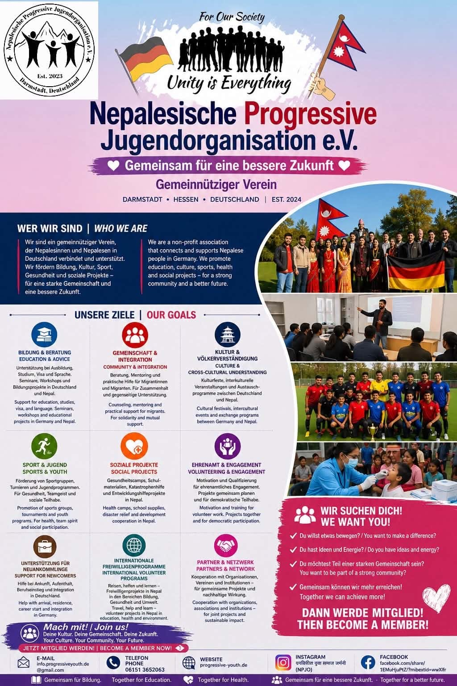
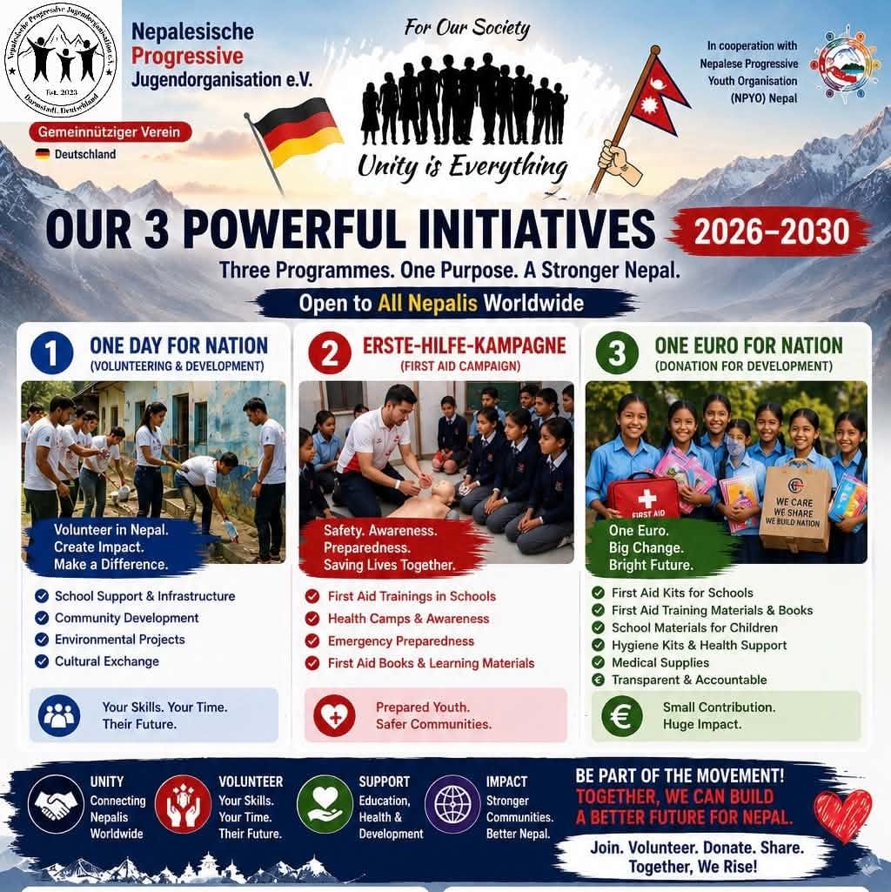

Eine Gemeinschaft, die Brücken bautA community that builds bridges
Die Nepalesische Progressive Jugendorganisation e.V. wurde 2024 gegründet, um junge Menschen in Deutschland und Nepal zu verbinden. Wir verfolgen gemeinnützige Ziele in den Bereichen Jugendhilfe, Bildung, Kultur und internationale Verständigung. The Nepalesische Progressive Jugendorganisation e.V. was founded in 2024 to connect young people in Germany and Nepal. We pursue charitable goals in youth welfare, education, culture and international understanding.
Transparent und offiziell anerkanntTransparent and officially recognised
- GegründetFounded
- 2024
- VereinsregisterRegister of associations
- VR 84826 — Amtsgericht DarmstadtDarmstadt district court
- SitzRegistered seat
- Darmstadt, Hessen, DeutschlandGermany
- Aktuelle SatzungCurrent statutes
- 10. Juni 202610 June 2026 — vollständig lesenread in full
- Gemeinnützig anerkanntRecognised as charitable
- seit 12. August 2026since 12 August 2026
- SteuernummerTax number
- 007 250 5414 7

Jede:r kann etwas beitragenEveryone can contribute something
Wir glauben, dass jede:r Nepali im Ausland einen Beitrag zur Heimat leisten kann — unabhängig davon, in welchem Land er oder sie lebt. Mit Fähigkeiten, Zeit, Beruf oder auch nur einem einzigen Euro. Gemeinsam bauen wir Brücken zwischen der weltweiten Diaspora und Nepal. We believe every Nepali abroad can contribute to their home country — regardless of which country they live in. With skills, time, profession, or even a single euro. Together we build bridges between the worldwide diaspora and Nepal.
Unser Auftrag ist es, nepalesische Jugendliche in Deutschland zu verbinden, unsere Kultur zu bewahren und aktiv zur Entwicklung Nepals beizutragen. Wir wollen nicht nur eine Gemeinschaft in Deutschland aufbauen, sondern Brücken schlagen — zwischen der gesamten nepalesischen Diaspora weltweit und den Schulen, Gemeinschaften und Menschen in Nepal. Our mandate is to unite young Nepalis in Germany, preserve our culture and actively contribute to Nepal's development. We do not only want to build a community in Germany, but to build bridges — between the entire Nepali diaspora worldwide and the schools, communities and people of Nepal.
VerbindenConnect
Vereinigung und Vernetzung von Jugendlichen in Deutschland sowie Kooperation mit sozialen Organisationen.Uniting and networking young people in Germany, plus cooperation with social organisations.
BewahrenPreserve
Interkulturelle Veranstaltungen und Kulturfeste, offen für die gesamte Öffentlichkeit.Intercultural events and cultural festivals, open to the general public.
BeitragenContribute
Bildung, Gesundheit und Infrastruktur in Nepal — gemeinsam mit lokalen Partnerorganisationen.Education, health and infrastructure in Nepal — together with local partner organisations.

Drei Programme. Ein gemeinsames Ziel.Three programmes. One shared purpose.
Mit „One Day for Nation“, der Erste-Hilfe-Kampagne und „One Euro for Nation“ verbinden wir freiwilliges Engagement, lebensrettendes Wissen und konkrete Unterstützung für Schulen und Gemeinschaften in Nepal.With One Day for Nation, the First Aid Campaign and One Euro for Nation, we combine volunteering, life-saving knowledge and practical support for schools and communities in Nepal.
Unsere neun VereinszweckeOur nine statutory purposes
Der Verein verfolgt ausschließlich und unmittelbar gemeinnützige und mildtätige Zwecke im Sinne des Abschnitts „Steuerbegünstigte Zwecke“ der Abgabenordnung. The association exclusively and directly pursues charitable and benevolent purposes within the meaning of the 'tax-privileged purposes' section of the German Fiscal Code.
JugendhilfeYouth welfare
Vernetzung von Jugendlichen, Freizeit-, Sport- und Kulturangebote sowie internationale Jugendbegegnungen zur Persönlichkeitsentwicklung.Networking young people, leisure, sports and cultural offers plus international youth encounters for personal development.
Erziehung & BildungEducation & training
Bildungsprojekte in Nepal, Seminare in Deutschland zu Visa, Ausbildung, Studium, Sprache und Integration sowie Freiwilligenprogramme.Education projects in Nepal, seminars in Germany on visas, training, study, language and integration, plus volunteer programmes.
Kunst & KulturArts & culture
Interkulturelle Veranstaltungen und Kulturfeste zur Förderung des Dialogs zwischen Kulturen — offen für alle.Intercultural events and festivals promoting dialogue between cultures — open to everyone.
VölkerverständigungInternational understanding
Interkulturelle Projekte sowie Austausch- und Begegnungsprogramme zwischen Deutschland und Nepal.Intercultural projects plus exchange and encounter programmes between Germany and Nepal.
Öffentliches GesundheitswesenPublic health
Kostenfreie Gesundheitscamps, Prävention in ländlichen Regionen Nepals und Erste-Hilfe-Schulungen an Schulen.Free health camps, prevention in rural Nepal and first aid training at schools.
EntwicklungszusammenarbeitDevelopment cooperation
Nachhaltige Projekte in Bildung, Gesundheit und Infrastruktur, gemeinsam mit lokalen Partnerorganisationen.Sustainable projects in education, health and infrastructure, together with local partner organisations.
SportSport
Förderung von Sportgruppen und -vereinen zur sozialen Integration sowie Organisation von Turnieren.Support for sports groups and clubs for social integration, plus organising tournaments.
Bürgerschaftliches EngagementCivic engagement
Aufklärung über den Wert des Ehrenamts, Vermittlung Ehrenamtlicher, Schulungen und öffentliche Anerkennung.Awareness of the value of volunteering, placing volunteers, training and public recognition.
Mildtätige ZweckeBenevolent purposes
Hilfs- und Unterrichtsmaterialien, Hygienekits und medizinische Sachspenden für bedürftige Personen; Spendenaktionen für Bildungsprojekte.Aid and teaching materials, hygiene kits and medical in-kind donations for people in need; donation drives for education projects.
Vorstand & OrganeBoard & bodies
Organe des Vereins sind die Mitgliederversammlung und der Vorstand (§ 12). Der Verein wird gemäß § 26 BGB gerichtlich und außergerichtlich durch zwei Vorstandsmitglieder gemeinsam vertreten. The bodies of the association are the general meeting and the board (§ 12). Under § 26 BGB, the association is represented in and out of court by two board members jointly.
Zusammensetzung des VorstandsComposition of the board
- 1Vorsitzende:rChairperson
- 2Stellvertretende:r Vorsitzende:rDeputy chairperson
- 3Schatzmeister:inTreasurer
- 4Schriftführer:inSecretary
- +Mindestens drei und bis zu fünf Beisitzer:innenAt least three and up to five assessors
Derzeit unterzeichnungsberechtigtCurrently signing for the association
Kesilal Sunchauri — Vorsitzende:rchairperson
Durga Sunchauri — Schriftführer:insecretary
Aufgaben im ÜberblickDuties at a glance
- VorsitzChair
- Leitet und repräsentiert den Verein, führt den Vorsitz in Versammlungen, überwacht Satzung und Beschlüsse, erstellt den Jahresbericht.Leads and represents the association, chairs meetings, oversees statutes and resolutions, prepares the annual report.
- Stellv. VorsitzDeputy chair
- Übernimmt bei Abwesenheit und unterstützt die Erfüllung der Vereinsziele.Steps in during absence and supports the fulfilment of the association's goals.
- SchriftführungSecretary
- Protokolle, Vereinskorrespondenz, Mitgliederliste, Organisation von Versammlungen.Minutes, correspondence, membership list, organising meetings.
- SchatzmeistereiTreasurer
- Kassengeschäfte; legt bis zum 1. März den Rechnungsabschluss vor. Zwei Kassenprüfer:innen prüfen jährlich.Accounts; presents the annual financial statement by 1 March. Two auditors review annually.
MitgliederversammlungGeneral meeting
Findet mindestens einmal jährlich statt, wird schriftlich mit zwei Wochen Frist und Tagesordnung einberufen. Sie wählt den Vorstand und die Kassenprüfer:innen, nimmt Berichte entgegen, beschließt Haushalt, Beiträge, Satzungsänderungen (Zweidrittelmehrheit) und die Auflösung (Dreiviertelmehrheit). Held at least once a year, convened in writing with two weeks' notice and an agenda. It elects the board and auditors, receives reports, decides on the budget, fees, amendments to the statutes (two-thirds majority) and dissolution (three-quarters majority).
ZweigstellenBranches
Der Verein kann Zweigstellen im gesamten Bundesgebiet errichten (§ 11). Sie sind organisatorisch an den Hauptverein angebunden, besitzen keine eigene Rechtspersönlichkeit und führen keine eigenen Kassen. Mitglieder einer Zweigstelle sind zugleich Mitglieder des Hauptvereins. The association may establish branches throughout Germany (§ 11). They are organisationally attached to the main association, have no separate legal personality and keep no separate accounts. Branch members are simultaneously members of the main association.
NPJOE Deutschland & NPYS-NNPJOE Germany & NPYS-N
Die Umsetzung in Nepal erfolgt in enger Partnerschaft mit der Nepalese Progressive Youth Society - Nepal (NPYS-N). NPJOE mobilisiert und koordiniert die Diaspora weltweit; NPYS-N ist unser vertrauensvoller Partner vor Ort. Die Zusammenarbeit ist seit dem 15. August 2026 durch ein gemeinsames Memorandum of Understanding geregelt. Implementation in Nepal takes place in close partnership with the Nepalese Progressive Youth Society - Nepal (NPYS-N). NPJOE mobilises and coordinates the diaspora worldwide; NPYS-N is our trusted on-the-ground partner. Since 15 August 2026, the cooperation has been governed by a joint Memorandum of Understanding.
- KooperationspartnerCooperation partner
- Nepalese Progressive Youth Society - Nepal (NPYS-N)
- Sitz & RegistrierungOffice & registration
- Tokha N.P., Ward No. 3, Kathmandu · No. 2083/084 · Social Organisation Registration Act 2034
- Vertreten durchRepresented by
- Sohan Prasad Neupane, VorsitzenderChairperson
- MOU unterzeichnetMOU signed
- 15. August 2026, Online-Meeting15 August 2026, online meeting
- SitzungszeitMeeting time
- 15:00–16:00 Uhr(3:00–4:00 PM)
- UnterzeichnendeSignatories
- Kesilal Sunchauri (NPJOE) · Sohan Prasad Neupane (NPYS-N)
- ProtokollführungMinutes taken by
- Durga Sunchauri, SchriftführerinSecretary
- KooperationszeitraumCooperation period
- 15. August 2026 bis 31. Dezember 203015 August 2026 to 31 December 2030
- MOU-Mindestziel Erste HilfeMOU First Aid baseline
- 500 Teilnehmende pro Jahr · 50 Schulen im Kooperationszeitraum500 participants per year · 50 schools during the cooperation period
NPJOE e.V.
- ✓Volunteers rekrutieren, prüfen und zertifizierenRecruit, screen and certify volunteers
- ✓Qualifizierte Trainer:innen und Material bereitstellenProvide qualified trainers and materials
- ✓Spenden und Vereinskonto verwaltenManage fundraising and the association account
- ✓Nur genehmigte Projektmittel übertragenTransfer approved project funds only
- ✓Jährliche Impactberichte veröffentlichenPublish annual impact reports
NPYS-N
- ✓Matching, Briefing und Vor-Ort-Einsatz koordinierenCoordinate matching, briefing and on-site deployment
- ✓Schulen und Gemeinschaften auswählenIdentify schools and communities
- ✓Geprüfte Projektvorschläge mit Budget vorlegenSubmit verified project proposals with budgets
- ✓Mittel in Nepal verwalten und Belege einreichenManage funds in Nepal and submit expense reports
- ✓Gemeindekontakt und nepalesisches Recht sicherstellenMaintain community liaison and Nepalese compliance
Beide SeitenBoth sides
- ✓Drei gemeinsame Programme umsetzenDeliver the three joint programmes
- ✓Mindestens zwei Koordinationstreffen jährlichHold at least two coordination meetings annually
- ✓Quartalsberichte zu Aktivitäten, Wirkung und MittelnQuarterly reports on activities, impact and funds
- ✓Personendaten vertraulich und gesetzeskonform behandelnProtect personal data and comply with applicable law
- ✓Zu den SDGs 3, 4 und 17 beitragenContribute to SDGs 3, 4 and 17
§ 3(f) Kooperation mit lokalen Partnerorganisationen zur Umsetzung von Entwicklungsmaßnahmencooperation with local partner organisations to implement development measures
Das MOU ist eine gemeinsame Absichtserklärung. Rechtlich bindende finanzielle Pflichten entstehen nur aus den ausdrücklich geregelten Bestimmungen.The MOU is a joint statement of intent. Legally binding financial obligations arise only from its expressly stated provisions.
Von der Gründung bis 2030From founding to 2030
- 2024
Gründung der NPJOENPJOE is founded
Die Organisation entsteht, um junge Menschen in Deutschland und Nepal zu verbinden.The organisation is founded to connect young people in Germany and Nepal.
- 2026 — 10. Juni10 June
Aktuelle Satzung und RegistereintragCurrent statutes and register entry
Die aktuelle Satzung wird beschlossen. Der Verein ist unter VR 84826 beim Amtsgericht Darmstadt eingetragen.The current statutes are adopted. The association is registered as VR 84826 at Darmstadt district court.
- 2026 — 12. August12 August
Gemeinnützigkeit anerkanntCharitable status recognised
Die Gemeinnützigkeit wird offiziell anerkannt. Spenden sind steuerlich absetzbar; der Verein stellt Spendenbescheinigungen aus.Charitable status is officially recognised. Donations are tax-deductible in Germany, and the association issues donation receipts.
- 2026 — 15. August15 August
MOU mit NPYS-N unterzeichnetMOU signed with NPYS-N
Beide Vorsitzenden unterzeichnen im Online-Meeting das Memorandum of Understanding für die drei gemeinsamen Programme bis Ende 2030.During an online meeting, both chairpersons sign the Memorandum of Understanding covering the three joint programmes through the end of 2030.
- 2026
Beschluss NPJOE-2026-001: drei KernprogrammeResolution NPJOE-2026-001: three core programmes
One Day for Nation, die Nationale Erste-Hilfe-Kampagne und One Euro for Nation werden einstimmig beschlossen.One Day for Nation, the National First Aid Campaign and One Euro for Nation are adopted unanimously.
- 2026–2027
Aufbau des Volunteer-NetzwerksBuilding the volunteer network
Registrierung, Matching-Verfahren mit NPYS-N, erste Einsätze und Zertifikate.Registration, matching process with NPYS-N, first assignments and certificates.
- 2027–2029
Skalierung der Erste-Hilfe-KampagneScaling the First Aid Campaign
Ausweitung auf weitere Provinzen, Ausbildung von Lehrkräften zu Trainer:innen, jährliche Auffrischungen.Expansion to further provinces, training teachers as trainers, annual refreshers.
- 2030
Ziel: 100 Erste-Hilfe-SchulenGoal: 100 First Aid Schools
Das Vereinsziel sind 100 Schulen; das MOU sichert als gemeinsame operative Mindestgröße 50 Schulen und mindestens 500 geschulte Teilnehmende pro Jahr ab.The association aims for 100 schools; the MOU establishes a shared operational baseline of 50 schools and at least 500 trained participants per year.
Werden Sie Teil davonBecome part of it
Mitglied, Volunteer oder Spender:in — jede Rolle trägt.Member, volunteer or donor — every role carries weight.